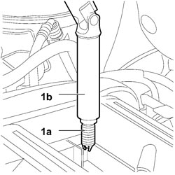
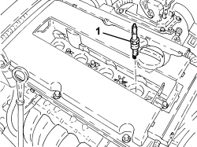

5510D10 SPARK PLUGS - R+R
- Path
- Procedures > 55 ELECTRICAL EQUIPMENT > 5510 ENGINE IGNITION > 5510D SPARK PLUGS AND LEADS > 5510D10 SPARK PLUGS - R+R
- Kind
- repair procedure (removal / refitting; the operation number is the code)
- Applies to
- engines: 1.8, 2.2; all production periods
- Interactive page
- https://sloeber94.github.io/elrnDB-fCrm/en/#/194000700
Applies to: engines: 2.2; all production periods
 Removing
Removing
 Refitting
Refitting- Turn the ignition key to the OFF position.
- Disconnect the negative battery terminal.
Description | Connector | |
|---|---|---|
BATTERY |
- Detach the upper engine protective cover releasing it from the retaining pins.
Op. 5510C14 IGNITION COIL/S - R.R.
1. Undo the spark plugs (1a) using the special spanner (1b) and remove them from the vehicle.

Applies to: engines: 2.2; all production periods
Refitting
Removing- Replace the spark plugs with a new set.
Fit the spark plugs and tighten them to the recommended torque.
Op. 5510C14 IGNITION COIL/S - R.R.
- Fit the upper engine protective cover on the retaining pins.
- Connect the negative battery terminal.
Description | Connector | |
|---|---|---|
BATTERY |
Applies to: engines: 1.8; all production periods
Removing
RefittingOp. 1016A40 IGNITION COIL COVER ON CYLINDER HEAD - R+R
Op. 5510C14 IGNITION COIL/S - R.R.
1. Unscrew the spark plugs and remove them.

Applies to: engines: 1.8; all production periods
Refitting
Removing- Fit the spark plugs and tighten them to the recommended torque.
Component | Fastening | dia | Value (daNm) | Validity |
|---|---|---|---|---|
Spark plugs | - | - | 2.5 | 1.8 |
Topics linked from this page (3)
Topics that link to this page (9)
- B010 ENGINE DOES NOT START (UNDER ANY CIRCUMSTANCES)
- B020 ENGINE STARTS, AND CUTS OUT STRAIGHT AWAY
- D001 ENGINE NOT RUNNING SMOOTHLY / (HESISTANT)
- D002 ENGINE NOT RUNNING SMOOTHLY / (LOSING POWER)
- D003 ENGINE NOT RUNNING SMOOTHLY / (IRREGULAR OPERATION)
- D010 ENGINE IDLE IRREGULAR
- 0010K60 60,000KM SERVICE
- 0010M20 120,000KM SERVICE
- 0010M80 180,000KM SERVICE